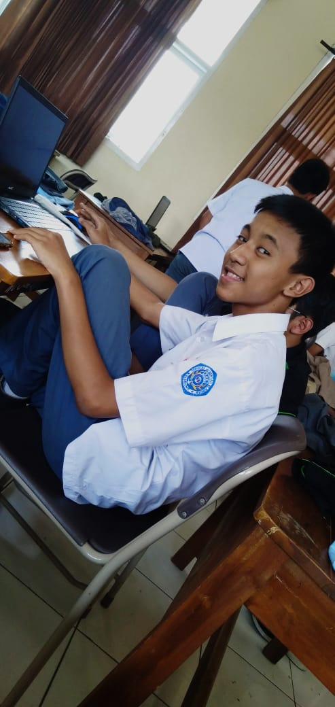

Biodata

Nama saya adalah Reza Adhitya Nugraha. Lahir di Batam, 07 Juni 2003. Cita-cita saya pada saat kecil adalah menjadi seorang pengusaha tapi, entah kenapa sekarang menjadi seorang programmer. Alasannya simpel karena ingin berkerja didepan laptop atau komputer. Saya anak pertama dari 3 bersaudara. Adik saya dua-duanya perempuan. Saya pindah dari batam ke Bandung pada tahun 2012. Sebelum saya masuk ke SMKN 4 Bandung saya SD di SDN Babakan Tarogong lalu melanjutkan SMP di SMPN 11 Bandung. Kalau ditanya alasan saya masuk ke jurusan RPL (Rekayasa Perangkat Lunak) mungkin jawabannya karena ingin mencoba hal-hal yang berhubungan dengan IT. Ingin menjadi bagian dalam sebuah aplikasi atau game entah dari developer, pemasaran, dll. Ya, kalau ditanya motto hidup gak tau apa motto hidupnya intinya mah selagi hidup lakuin apa yang bisa dilakuin dan jangan lupa juga beribadah karena hidup gak selalu mikirin dunia sekali-kali juga mikirin akhirat tapi jangan sekali-kali harus selalu. Sekian biodata saya. Biodata lengkap bisa dilihat dibawah.